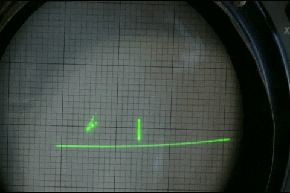
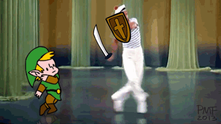
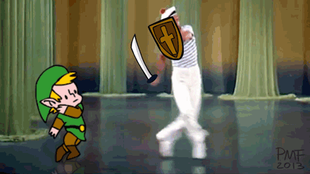
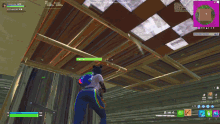
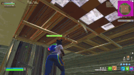

Los primeros experimentos 1940s & 1950s
 La historia de los videojuegos comenzó mucho antes de que existieran las consolas modernas. En los años 40 y 50, algunos científicos e ingenieros empezaron a crear programas interactivos en grandes computadoras. Uno de los primeros ejemplos fue “Tennis for Two” (1958), un sencillo juego de tenis mostrado en un osciloscopio. Aunque era experimental, marcó el nacimiento del entretenimiento digital.
El nacimiento del videojuego comercial 1970s


En los años 70, los videojuegos dejaron los laboratorios y llegaron al público. Pong (1972), creado por Atari, fue el primer gran éxito comercial y popularizó las máquinas recreativas. Poco después aparecieron títulos icónicos como Space Invaders y Pac-Man, que convirtieron el videojuego en una nueva forma de cultura popular y de negocio.
La era de las consolas y los hogares 1980s
 



Durante los 80, los videojuegos se mudaron del arcade al hogar. Consolas como la Atari 2600, la Nintendo Entertainment System (NES) y la Sega Master System revolucionaron el entretenimiento familiar. En esta época nacieron personajes legendarios como Mario, Zelda y Sonic. Los gráficos seguían siendo simples, pero los juegos empezaron a contar historias más elaboradas y a tener música inolvidable.
La revolución en tres dimensiones 1990s
Los años 90 trajeron la era del 3D. Consolas como la PlayStation, la Nintendo 64 y la Sega Dreamcast introdujeron mundos tridimensionales, voces digitales y cinemáticas. Juegos como Super Mario 64, Final Fantasy VII y Tomb Raider demostraron que los videojuegos podían ser tan profundos y emotivos como una película. Además, surgieron los primeros juegos en línea, abriendo las puertas a la conectividad global.
La era digital y los estudios independientes 2000s - 2010s


Con el nuevo milenio, Internet cambió todo. Aparecieron plataformas como Steam, que permitieron distribuir videojuegos digitalmente. Esto ayudó a los desarrolladores independientes (indies) a crear juegos sin depender de grandes empresas. Surgieron títulos como Minecraft o Undertale, hechos por pocos creadores, pero con millones de seguidores. Los videojuegos se volvieron más accesibles, variados y creativos.
La nueva generación y el futuro 2010s - Actualidad
 

Hoy, los videojuegos son una de las industrias más grandes del mundo. La realidad virtual, la inteligencia artificial y los gráficos hiperrealistas han llevado la experiencia a otro nivel. Juegos como The Legend of Zelda: Breath of the Wild o Fortnite mezclan mundos abiertos, comunidad global y tecnología avanzada. El futuro apunta a experiencias aún más inmersivas, donde los límites entre la realidad y el juego se desdibujan cada vez más.